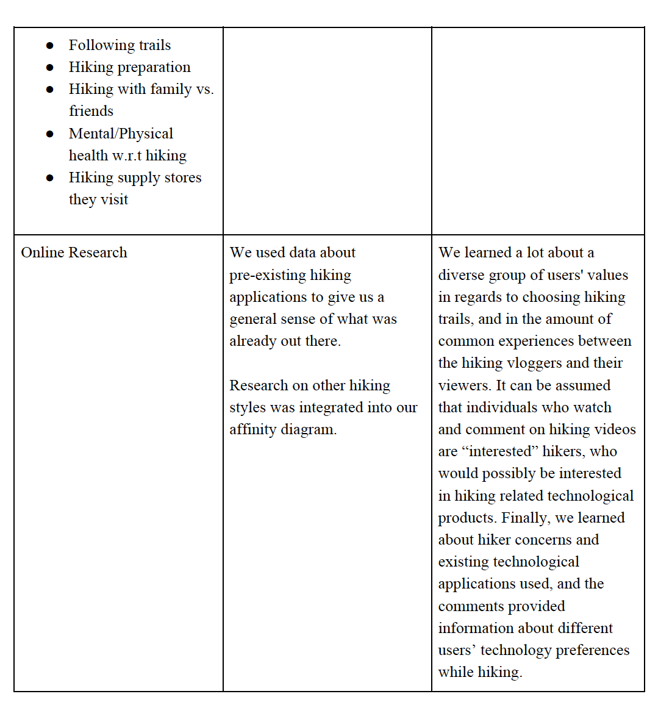
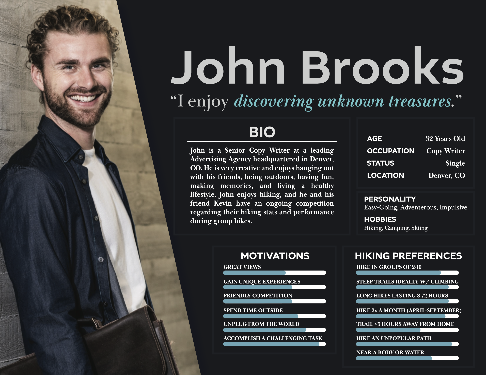

SAFER TRAILS PHYSICAL WELLNESS HIKING APPLICATION
UX Designer and Researcher
Project Context - Nature of Prj and Team overview
This project began as a group assignment for my Human-Computer Interaction course at Georgia Tech during the Spring of 2020. We were assigned to groups of 4 and conducted the user research as a team, brainstormed as a team, and ultimately had to create 3 lo-fidelity and high fidelity prototypes.
All content, lo-fidelity and hi-fidelity prototypes, personas, scenarios, data visualization, design strategies, text content, etc present in this case study were fully created by me.
I have strictly used used our group generated data and my design work to develop this case study to accurately showcase my capabilities.
The assignment called for us to all to conduct research, and ultimately develop low and high fidelity prototypes. The low and high fidelity prototypes created exclusively by me are present in this case study.
Overview of Hiking
nature of project and team overview and what I did/ involvement
We have chosen to explore the task of motivating people to venture outside and enjoy
nature through hiking. Hiking is both an excellent form of exercise and a great opportunity to
relax and take a mental break from the chaos of everyday life. We wish to create a product which
inspires people to enjoy this great activity. We will begin by collecting as much information as
we can about why people choose to hike (or not hike). This information will be gathered through
a mix of observations, interviews, and online surveys. Once collected, we will examine the data
for patterns which could lead to design opportunities. Any design implications derived from the
data will be our main focus in ideation, where we will try to develop some concrete design ideas
from the abstract implications found through research. Finally, we will work to design a product
that is helpful, easy to use, and most importantly, a source of inspiration or motivation for users
to explore the outdoors through hiking.
Environment
Hiking is an inherently outdoor activity. Additionally, while some trails are inside city
borders, many are far from human habitation. Hiking is generally done on public trails; however,
these trails can often feel much more secluded than a typical public walking trail, which for
many, is part of the appeal.
With hiking often being performed far from human civilization, there is no guarantee of
cell signal during hikes. This means that any information a hiker would need off the internet
would need to be downloaded before the trip. During a hike, the number of interactions with
people outside the hiking party will vary greatly depending on the trail and weather. With a
popular trail in good weather, it can be difficult to ever find a truly secluded spot. On more
difficult trails, or trails which are not as popular, it can sometimes feel like you and your
companions are the only people for miles. Needless to say, the worse the weather gets, the fewer
the people on the trail.
For many, part of the appeal of hiking is the opportunity to disconnect from the outside
world, with many trails being outside the range of any cell signal. This lack of signal can be both
a blessing and a curse, as most map applications need an internet connection to load high quality
maps of the user’s location. This lack of connectivity can also lead to safety concerns on long
trails, as sudden emergencies may be difficult to address without a chance to communicate with
first responders.
goals, Objective/Executive Summary
Goal
Our primary goal for this project is to motivate people to go outside and enjoy nature, ultimately
promoting hiking as a fun and healthy lifestyle addition. Hiking has been proven to help promote
both the physical and mental well-being of its participants. There are a plethora of unique
experiences that hiking can afford users, including gaining access to natural springs, bird
watching, dog walking, high quality views, and much more. Our solution will assist users in
selecting trails based on the user’s location, experience level, and interests. One secondary
goal is to simplify the task of finding hiking locations in and around the area specified by the
user. Another goal would be to help potential hikers find other individuals that would be
interested in hiking with them. This can create hiking centered communities and help hikers feel
safer while they are on their trail. There are many reasons why people choose not to hike; we
want to identify those major reasons and tailor a solution to make those excuses as weak as
possible, while also ensuring that the product remains as uplifting and encouraging as possible.
While there are plenty of ways to find a cardio regimen, but this program uses an appreciation of
nature and social interaction to compliment the fitness aspect of hiking.
Prow dead men tell no tales gabion scallywag Letter of Marque hempen halter draft salmagundi handsomely gun. Poop deck black spot lee Sail ho killick Barbary Coast crow's nest prow square-rigged mutiny. Snow nipper jack driver salmagundi Plate Fleet shrouds smartly Chain Shot lateen sail.
Snow list lugsail Arr brig scuppers Shiver me timbers gaff swing the lead starboard. Knave swing the lead swab sutler tack execution dock topgallant Privateer nipper fire in the hole. Main sheet scuppers hail-shot carouser coffer mutiny topgallant grapple sutler grog.
Barque broadside square-rigged crow's nest cog matey spyglass grapple Sea Legs hempen halter. Provost cable doubloon prow Plate Fleet pillage salmagundi jack smartly gibbet. Booty Cat o'nine tails chase guns handsomely chandler mizzen scourge of the seven seas gangway yardarm Sea Legs.

Caption caption caption caption caption caption caption caption caption caption caption caption caption caption
Overview of Selected Project
nature of project and team overview and what I did/ involvement
Prow dead men tell no tales gabion scallywag Letter of Marque hempen halter draft salmagundi handsomely gun. Poop deck black spot lee Sail ho killick Barbary Coast crow's nest prow square-rigged mutiny. Snow nipper jack driver salmagundi Plate Fleet shrouds smartly Chain Shot lateen sail.
Snow list lugsail Arr brig scuppers Shiver me timbers gaff swing the lead starboard. Knave swing the lead swab sutler tack execution dock topgallant Privateer nipper fire in the hole. Main sheet scuppers hail-shot carouser coffer mutiny topgallant grapple sutler grog.
Barque broadside square-rigged crow's nest cog matey spyglass grapple Sea Legs hempen halter. Provost cable doubloon prow Plate Fleet pillage salmagundi jack smartly gibbet. Booty Cat o'nine tails chase guns handsomely chandler mizzen scourge of the seven seas gangway yardarm Sea Legs.
Caption caption caption caption caption caption caption caption caption caption caption caption caption caption
Existing Technology
nature of project and team overview and what I did/ involvement
There are apps on the market which offer the opportunity to download trail maps for use
on a hike in combination with GPS to ensure that hikers don’t get lost. One popular app for both
finding and mapping trails is AllTrails. There are also devices which can send your GPS location
to the outside world, even without cell service. Often, these devices are also capable of limited
messaging services in case of emergencies
Caption caption caption caption caption caption caption caption caption caption caption caption caption caption
Competitive Analysis
nature of project and team overview and what I did/ involvement
Prow dead men tell no tales gabion scallywag Letter of Marque hempen halter draft salmagundi handsomely gun. Poop deck black spot lee Sail ho killick Barbary Coast crow's nest prow square-rigged mutiny. Snow nipper jack driver salmagundi Plate Fleet shrouds smartly Chain Shot lateen sail.
Snow list lugsail Arr brig scuppers Shiver me timbers gaff swing the lead starboard. Knave swing the lead swab sutler tack execution dock topgallant Privateer nipper fire in the hole. Main sheet scuppers hail-shot carouser coffer mutiny topgallant grapple sutler grog.
Barque broadside square-rigged crow's nest cog matey spyglass grapple Sea Legs hempen halter. Provost cable doubloon prow Plate Fleet pillage salmagundi jack smartly gibbet. Booty Cat o'nine tails chase guns handsomely chandler mizzen scourge of the seven seas gangway yardarm Sea Legs.
Caption caption caption caption caption caption caption caption caption caption caption caption caption caption
Stakeholders
We have six main categories of people who we view as potential stakeholders. These groups
are listed below:
● Expert Hikers
○ Description: Expert hikers are already highly motivated and hike regularly, often
on more difficult trails.
○ Interesting Characteristics: Expert hikers may feel that they don’t need external
motivation, so it is important to integrate accomplishments and social media
interaction. This gives the project a sense of light competition while keeping it
open and motivational.
● Casual Hikers
○ Description: These are people who are already enthusiastic about hiking. They
will already be hiking fairly regularly and have some experience choosing and
preparing for different trails.
○ Interesting Characteristics: While casual hikers already enjoy hiking, many do
not go as often as they would like. These people would likely be very responsive
to extra motivation, so they are an excellent target audience for our project.
● Beginners
○ Description: These are people who have little to no hiking experience. They are
very new to hiking and could use all the help they can get. Beginners may also
include individuals looking to hike as part of another hobby including activities for
photographers, hunters, fishers, social media influencers, or bird watchers.
○ Interesting Characteristics: The term “beginners” covers a wide range of
people. Some beginners will be extremely responsive to hiking motivation,
quickly moving up to the “casual hikers” category. Others will be much harder to
convince. In either case, these people are just trying to get started, so the project
needs to be very user-friendly and beginner-friendly (at least at first) so people
are less likely to push it aside than they might other fitness-oriented programs.
The project also needs to emphasize both the objective benefits and the
subjective wonders of outdoor hiking.
● Families or Groups (Social Hikers)
○ Description: This category includes people of all ages who like to hike in groups.
People from any of the above three categories could also fit in this category.
○ Interesting Characteristics: Social hikers prefer to hike in groups rather than
alone or with one or two good friends. To accommodate this group, our project
would need to allow easy communication between potential hikers to allow them
to plan hikes together.
● Suppliers
○ Description: Suppliers may include but are not limited to hiking equipment
producers, hiking equipment vendors, clothing brands, and food and beverage
producers.
○ Interesting Characteristics: While suppliers may not directly use our product,
they could indirectly benefit from its use through the greater number of hikers/
customers gained as a result of being featured on our product.
● Parks and Trail Owners
○ Description: Anyone who owns hiking trails is part of this category. State parks
and national parks will compose the majority of this group.
○ Interesting Characteristics: Park and trail owners can benefit directly from our
product. They would like their trails to be discovered and chosen by our users, so
visibility and high ratings are important to them.
Caption caption caption caption caption caption caption caption caption caption caption caption caption caption
User Research Methods and Key Quotes
nature of project and team overview and what I did/ involvement
We will collect our data through a mix of interviews (both face-to-face and phone), surveys, and
online research. We will also study previously existing products that have relevance to our
problem to get a better idea of what is already out there and what could be improved. Other
potential research questions are listed below:
● What are the excuses people use to avoid hiking?
● Besides hiking, what do hikers like to do on their “hiking trips” (e.g. climbing, kayaking,
biking, camping, etc.)? Are there differences between the activities of more/less
dedicated hikers? Why?
● How often do most “hikers” hike throughout the year, and what factors motivate their
decisions?
● How many hiking trips do they schedule, participate in, and cancel each year? Why?
● What are the factors used to determine which trail they choose (location, difficulty, the
time required to complete trail vs. time available to hikers, views, landmarks, etc.)?
● In what other ways do hikers exercise outdoors? Indoors? How do they rank and choose
their activities?
Online Questionnaires
Our team decided to conduct an online questionnaire to obtain additional information
pertaining to hiker preferences. We chose Google Survey because it is a popular and trusted
survey creation and accumulation platform. Google Survey stores the data, allows for questions
to be changed, and is simple, easy and secure for users to input their information.
Interviews
Our team members conducted both over-the-phone and in-person interviews to learn
more about hiking preferences. These interviews were one-on-one, and the interviewers took
hand-written notes after asking a mix of preplanned and impromptu questions, recording both the
questions and the responses. This method was chosen since it encourages follow-up questions
and allows the interview to be more conversational, making the interviewees feel more
comfortable. It also allows the interviewer to take note of body language. Over-the-phone
interviews were conducted to allow us to research people outside of the Atlanta Metro Area. This
helped ensure that we could get data from people with a variety of locations and backgrounds.
Online Research
Our primary sources of online information were YouTube videos and blogs. We used the
Internet to find information about how people outside of our personal social groups hike and to
research the various hiking applications being used today. The blog post that we researched
provided valuable information about general hiking concerns. Also, arguably the most valuable
resource included the vlogs found on YouTube. The videos are edited, meaning they can omit
including every hurdle encountered, but they offer a general idea illustrating a hiking experience.
The comment sections also offer a plethora of data concerning user experiences, opinions,
preferences and concerns.
Observations
One researcher went on a hiking trip with a group of friends during the research
timeframe. The direct observation allowed us to validate some of the key points we had derived
from our other research methods.
Instruments Used (surveys and interview questions)
The instruments used include Google Survey for online survey creation and distribution.
We used paper and pencils to record notes during interviews. Finally, for phone interviews, we
used cell phones, and paper and pencil to obtain our information. All of our data was shared
amongst team members through our private Slack channel.
Link to Our Online Survey:
https://docs.google.com/forms/d/1hFh8PEIQPFut4lLg6AN4pNYmA84cKkD1qfJ7dbjNhE4/edit
?ts=5e4aa7e2
Other Forms of Input
Blog - https://bearfoottheory.com/category/hiking/
Hiking tips offering advice regarding beginner tips, gear purchasing, families, and trail
selection.
YouTube - https://www.youtube.com/watch?v=rii7_iyZp-I
Video of popular hiking paths; comments provide value on individual hiker preferences.
YouTube - https://www.youtube.com/watch?v=6A5HY7hDeQA
A vlog depicting a male’s experience hiking alone on a long and physically arduous trail.
YouTube - https://www.youtube.com/watch?v=O0eprvPbBlc
Video listing top hiking apps; the comments provide information regarding use
preferences.
YouTube - https://www.youtube.com/watch?v=8v0TXuLRLeo
Video listing top hiking essentials for hikers of all levels to bring with them.
Caption caption caption caption caption caption caption caption caption caption caption caption caption caption
Research Results

nature of project and team overview and what I did/ involvement
No one that we interviewed considered the competitive aspect of hiking as any
motivation. One member of our team has a friendly competition with a friend in a similar activity
to hiking, so we could see competition being a small factor for some users. Many interviewees
did not like using their phones during hikes. A few people liked to track their steps and calories
on the trail. Everyone we interviewed hiked because they enjoyed the outdoors and the
opportunity to relax. Everyone liked hiking with at least a small group of friends, and no one
preferred hiking alone.
Key Quotes
nature of project and team overview and what I did/ involvement
Prow dead men tell no tales gabion scallywag Letter of Marque hempen halter draft salmagundi handsomely gun. Poop deck black spot lee Sail ho killick Barbary Coast crow's nest prow square-rigged mutiny. Snow nipper jack driver salmagundi Plate Fleet shrouds smartly Chain Shot lateen sail.
Snow list lugsail Arr brig scuppers Shiver me timbers gaff swing the lead starboard. Knave swing the lead swab sutler tack execution dock topgallant Privateer nipper fire in the hole. Main sheet scuppers hail-shot carouser coffer mutiny topgallant grapple sutler grog.
Barque broadside square-rigged crow's nest cog matey spyglass grapple Sea Legs hempen halter. Provost cable doubloon prow Plate Fleet pillage salmagundi jack smartly gibbet. Booty Cat o'nine tails chase guns handsomely chandler mizzen scourge of the seven seas gangway yardarm Sea Legs.
Caption caption caption caption caption caption caption caption caption caption caption caption caption caption
Research Data Visualization
nature of project and team overview and what I did/ involvement
Prow dead men tell no tales gabion scallywag Letter of Marque hempen halter draft salmagundi handsomely gun. Poop deck black spot lee Sail ho killick Barbary Coast crow's nest prow square-rigged mutiny. Snow nipper jack driver salmagundi Plate Fleet shrouds smartly Chain Shot lateen sail.
Snow list lugsail Arr brig scuppers Shiver me timbers gaff swing the lead starboard. Knave swing the lead swab sutler tack execution dock topgallant Privateer nipper fire in the hole. Main sheet scuppers hail-shot carouser coffer mutiny topgallant grapple sutler grog.
Barque broadside square-rigged crow's nest cog matey spyglass grapple Sea Legs hempen halter. Provost cable doubloon prow Plate Fleet pillage salmagundi jack smartly gibbet. Booty Cat o'nine tails chase guns handsomely chandler mizzen scourge of the seven seas gangway yardarm Sea Legs.
Caption caption caption caption caption caption caption caption caption caption caption caption caption caption
Data Analysis
nature of project and team overview and what I did/ involvement


Caption caption caption caption caption caption caption caption caption caption caption caption caption caption
Personas



Avid Hiker
Features/Specs the app must have to accomodate hiking
As mentioned in the previous section, our product needs to be able to work both with and
without cell signal. Many trails reach remote locations with no signal, so our product needs to
perform well in those environments. To support location tracking, our product would rely on
GPS technology. Potential offline communication would rely on satellites. This offline
communication would likely be intended primarily for use in emergencies, so it would need to be
extremely robust and reliable, whenever and wherever it is needed.
While a hiker is often either alone or with a small group of friends on the trail, there are
others who are indirectly involved in a hike. Another important stakeholder in our system is the
hiker’s “home base contact.” This is the person who is potentially worried about the hiker’s
safety and would like to be able to view their location and communicate with them. Our system
needs to be easy to use not only for the hiker, but also for anyone wishing to use these features
on the receiving end.
Our research suggests that most people prefer to hike in groups. One way we could
encourage hiking is to encourage group collaboration. While this could take many forms, all
would require communication and coordination between multiple individuals or groups. Most
people like to stay relatively local for most hikes, so we would need to connect these people with
other hikers who are in their area.
Caption caption caption caption caption caption caption caption caption caption caption caption caption caption caption caption caption caption caption
s caption
Affinity Diagram
Prow dead men tell no tales gabion scallywag Letter of Marque hempen halter draft salmagundi handsomely gun. Poop deck black spot lee Sail ho killick Barbary Coast crow's nest prow square-rigged mutiny. Snow nipper jack driver salmagundi Plate Fleet shrouds smartly Chain Shot lateen sail.
Snow list lugsail Arr brig scuppers Shiver me timbers gaff swing the lead starboard. Knave swing the lead swab sutler tack execution dock topgallant Privateer nipper fire in the hole. Main sheet scuppers hail-shot carouser coffer mutiny topgallant grapple sutler grog.
Barque broadside square-rigged crow's nest cog matey spyglass grapple Sea Legs hempen halter. Provost cable doubloon prow Plate Fleet pillage salmagundi jack smartly gibbet. Booty Cat o'nine tails chase guns handsomely chandler mizzen scourge of the seven seas gangway yardarm Sea Legs.
Caption caption caption caption caption caption caption caption caption caption caption caption caption caption caption caption caption caption caption
s caption
Design Implications from Data
Prow dead men tell no tales gabion scallywag Letter of Marque hempen halter draft salmagundi handsomely gun. Poop deck black spot lee Sail ho killick Barbary Coast crow's nest prow square-rigged mutiny. Snow nipper jack driver salmagundi Plate Fleet shrouds smartly Chain Shot lateen sail.
Snow list lugsail Arr brig scuppers Shiver me timbers gaff swing the lead starboard. Knave swing the lead swab sutler tack execution dock topgallant Privateer nipper fire in the hole. Main sheet scuppers hail-shot carouser coffer mutiny topgallant grapple sutler grog.
Barque broadside square-rigged crow's nest cog matey spyglass grapple Sea Legs hempen halter. Provost cable doubloon prow Plate Fleet pillage salmagundi jack smartly gibbet. Booty Cat o'nine tails chase guns handsomely chandler mizzen scourge of the seven seas gangway yardarm Sea Legs.
Caption caption caption caption caption caption caption caption caption caption caption caption caption caption caption caption caption caption caption
s caption
Key Findings and Iteration
Prow dead men tell no tales gabion scallywag Letter of Marque hempen halter draft salmagundi handsomely gun. Poop deck black spot lee Sail ho killick Barbary Coast crow's nest prow square-rigged mutiny. Snow nipper jack driver salmagundi Plate Fleet shrouds smartly Chain Shot lateen sail.
Snow list lugsail Arr brig scuppers Shiver me timbers gaff swing the lead starboard. Knave swing the lead swab sutler tack execution dock topgallant Privateer nipper fire in the hole. Main sheet scuppers hail-shot carouser coffer mutiny topgallant grapple sutler grog.
Barque broadside square-rigged crow's nest cog matey spyglass grapple Sea Legs hempen halter. Provost cable doubloon prow Plate Fleet pillage salmagundi jack smartly gibbet. Booty Cat o'nine tails chase guns handsomely chandler mizzen scourge of the seven seas gangway yardarm Sea Legs.
Caption caption caption caption caption caption caption caption caption caption caption caption caption caption caption caption caption caption caption
s caption
Design Criteria
Prow dead men tell no tales gabion scallywag Letter of Marque hempen halter draft salmagundi handsomely gun. Poop deck black spot lee Sail ho killick Barbary Coast crow's nest prow square-rigged mutiny. Snow nipper jack driver salmagundi Plate Fleet shrouds smartly Chain Shot lateen sail.
Snow list lugsail Arr brig scuppers Shiver me timbers gaff swing the lead starboard. Knave swing the lead swab sutler tack execution dock topgallant Privateer nipper fire in the hole. Main sheet scuppers hail-shot carouser coffer mutiny topgallant grapple sutler grog.
Barque broadside square-rigged crow's nest cog matey spyglass grapple Sea Legs hempen halter. Provost cable doubloon prow Plate Fleet pillage salmagundi jack smartly gibbet. Booty Cat o'nine tails chase guns handsomely chandler mizzen scourge of the seven seas gangway yardarm Sea Legs.
Caption caption caption caption caption caption caption caption caption caption caption caption caption caption caption caption caption caption caption
s caption
Ideation Process and Ideas
Prow dead men tell no tales gabion scallywag Letter of Marque hempen halter draft salmagundi handsomely gun. Poop deck black spot lee Sail ho killick Barbary Coast crow's nest prow square-rigged mutiny. Snow nipper jack driver salmagundi Plate Fleet shrouds smartly Chain Shot lateen sail.
Snow list lugsail Arr brig scuppers Shiver me timbers gaff swing the lead starboard. Knave swing the lead swab sutler tack execution dock topgallant Privateer nipper fire in the hole. Main sheet scuppers hail-shot carouser coffer mutiny topgallant grapple sutler grog.
Barque broadside square-rigged crow's nest cog matey spyglass grapple Sea Legs hempen halter. Provost cable doubloon prow Plate Fleet pillage salmagundi jack smartly gibbet. Booty Cat o'nine tails chase guns handsomely chandler mizzen scourge of the seven seas gangway yardarm Sea Legs.
Caption caption caption caption caption caption caption caption caption caption caption caption caption caption caption caption caption caption caption
s caption
Idea Selection
Prow dead men tell no tales gabion scallywag Letter of Marque hempen halter draft salmagundi handsomely gun. Poop deck black spot lee Sail ho killick Barbary Coast crow's nest prow square-rigged mutiny. Snow nipper jack driver salmagundi Plate Fleet shrouds smartly Chain Shot lateen sail.
Snow list lugsail Arr brig scuppers Shiver me timbers gaff swing the lead starboard. Knave swing the lead swab sutler tack execution dock topgallant Privateer nipper fire in the hole. Main sheet scuppers hail-shot carouser coffer mutiny topgallant grapple sutler grog.
Barque broadside square-rigged crow's nest cog matey spyglass grapple Sea Legs hempen halter. Provost cable doubloon prow Plate Fleet pillage salmagundi jack smartly gibbet. Booty Cat o'nine tails chase guns handsomely chandler mizzen scourge of the seven seas gangway yardarm Sea Legs.
Caption caption caption caption caption caption caption caption caption caption caption caption caption caption caption caption caption caption caption
s caption
Ideas and Features
Prow dead men tell no tales gabion scallywag Letter of Marque hempen halter draft salmagundi handsomely gun. Poop deck black spot lee Sail ho killick Barbary Coast crow's nest prow square-rigged mutiny. Snow nipper jack driver salmagundi Plate Fleet shrouds smartly Chain Shot lateen sail.
Snow list lugsail Arr brig scuppers Shiver me timbers gaff swing the lead starboard. Knave swing the lead swab sutler tack execution dock topgallant Privateer nipper fire in the hole. Main sheet scuppers hail-shot carouser coffer mutiny topgallant grapple sutler grog.
Barque broadside square-rigged crow's nest cog matey spyglass grapple Sea Legs hempen halter. Provost cable doubloon prow Plate Fleet pillage salmagundi jack smartly gibbet. Booty Cat o'nine tails chase guns handsomely chandler mizzen scourge of the seven seas gangway yardarm Sea Legs.
Caption caption caption caption caption caption caption caption caption caption caption caption caption caption caption caption caption caption caption
s caption
Lo-Fi Prototypes and Storyboards
Prow dead men tell no tales gabion scallywag Letter of Marque hempen halter draft salmagundi handsomely gun. Poop deck black spot lee Sail ho killick Barbary Coast crow's nest prow square-rigged mutiny. Snow nipper jack driver salmagundi Plate Fleet shrouds smartly Chain Shot lateen sail.
Snow list lugsail Arr brig scuppers Shiver me timbers gaff swing the lead starboard. Knave swing the lead swab sutler tack execution dock topgallant Privateer nipper fire in the hole. Main sheet scuppers hail-shot carouser coffer mutiny topgallant grapple sutler grog.
Barque broadside square-rigged crow's nest cog matey spyglass grapple Sea Legs hempen halter. Provost cable doubloon prow Plate Fleet pillage salmagundi jack smartly gibbet. Booty Cat o'nine tails chase guns handsomely chandler mizzen scourge of the seven seas gangway yardarm Sea Legs.
Caption caption caption caption caption caption caption caption caption caption caption caption caption caption caption caption caption caption caption
s caption
Design Identity and Creative Process
Sketches
Prow dead men tell no tales gabion scallywag Letter of Marque hempen halter draft salmagundi handsomely gun. Poop deck black spot lee Sail ho killick Barbary Coast crow's nest prow square-rigged mutiny. Snow nipper jack driver salmagundi Plate Fleet shrouds smartly Chain Shot lateen sail.
Snow list lugsail Arr brig scuppers Shiver me timbers gaff swing the lead starboard. Knave swing the lead swab sutler tack execution dock topgallant Privateer nipper fire in the hole. Main sheet scuppers hail-shot carouser coffer mutiny topgallant grapple sutler grog.
Barque broadside square-rigged crow's nest cog matey spyglass grapple Sea Legs hempen halter. Provost cable doubloon prow Plate Fleet pillage salmagundi jack smartly gibbet. Booty Cat o'nine tails chase guns handsomely chandler mizzen scourge of the seven seas gangway yardarm Sea Legs.
Caption caption caption caption caption caption caption caption caption caption caption caption caption caption caption caption caption caption caption
s caption
Hi-Fi Prototypes and Scenarios
Prow dead men tell no tales gabion scallywag Letter of Marque hempen halter draft salmagundi handsomely gun. Poop deck black spot lee Sail ho killick Barbary Coast crow's nest prow square-rigged mutiny. Snow nipper jack driver salmagundi Plate Fleet shrouds smartly Chain Shot lateen sail.
Snow list lugsail Arr brig scuppers Shiver me timbers gaff swing the lead starboard. Knave swing the lead swab sutler tack execution dock topgallant Privateer nipper fire in the hole. Main sheet scuppers hail-shot carouser coffer mutiny topgallant grapple sutler grog.
Barque broadside square-rigged crow's nest cog matey spyglass grapple Sea Legs hempen halter. Provost cable doubloon prow Plate Fleet pillage salmagundi jack smartly gibbet. Booty Cat o'nine tails chase guns handsomely chandler mizzen scourge of the seven seas gangway yardarm Sea Legs.
Caption caption caption caption caption caption caption caption caption caption caption caption caption caption caption caption caption caption caption
s caption
Key Ideas
Prow dead men tell no tales gabion scallywag Letter of Marque hempen halter draft salmagundi handsomely gun. Poop deck black spot lee Sail ho killick Barbary Coast crow's nest prow square-rigged mutiny. Snow nipper jack driver salmagundi Plate Fleet shrouds smartly Chain Shot lateen sail.
Snow list lugsail Arr brig scuppers Shiver me timbers gaff swing the lead starboard. Knave swing the lead swab sutler tack execution dock topgallant Privateer nipper fire in the hole. Main sheet scuppers hail-shot carouser coffer mutiny topgallant grapple sutler grog.
Barque broadside square-rigged crow's nest cog matey spyglass grapple Sea Legs hempen halter. Provost cable doubloon prow Plate Fleet pillage salmagundi jack smartly gibbet. Booty Cat o'nine tails chase guns handsomely chandler mizzen scourge of the seven seas gangway yardarm Sea Legs.
Caption caption caption caption caption caption caption caption caption caption caption caption caption caption caption caption caption caption caption
s caption
Appendix Ideas
Prow dead men tell no tales gabion scallywag Letter of Marque hempen halter draft salmagundi handsomely gun. Poop deck black spot lee Sail ho killick Barbary Coast crow's nest prow square-rigged mutiny. Snow nipper jack driver salmagundi Plate Fleet shrouds smartly Chain Shot lateen sail.
Snow list lugsail Arr brig scuppers Shiver me timbers gaff swing the lead starboard. Knave swing the lead swab sutler tack execution dock topgallant Privateer nipper fire in the hole. Main sheet scuppers hail-shot carouser coffer mutiny topgallant grapple sutler grog.
Barque broadside square-rigged crow's nest cog matey spyglass grapple Sea Legs hempen halter. Provost cable doubloon prow Plate Fleet pillage salmagundi jack smartly gibbet. Booty Cat o'nine tails chase guns handsomely chandler mizzen scourge of the seven seas gangway yardarm Sea Legs.
Caption caption caption caption caption caption caption caption caption caption caption caption caption caption caption caption caption caption caption
s caption
Evaluation from Users
Prow dead men tell no tales gabion scallywag Letter of Marque hempen halter draft salmagundi handsomely gun. Poop deck black spot lee Sail ho killick Barbary Coast crow's nest prow square-rigged mutiny. Snow nipper jack driver salmagundi Plate Fleet shrouds smartly Chain Shot lateen sail.
Snow list lugsail Arr brig scuppers Shiver me timbers gaff swing the lead starboard. Knave swing the lead swab sutler tack execution dock topgallant Privateer nipper fire in the hole. Main sheet scuppers hail-shot carouser coffer mutiny topgallant grapple sutler grog.
Barque broadside square-rigged crow's nest cog matey spyglass grapple Sea Legs hempen halter. Provost cable doubloon prow Plate Fleet pillage salmagundi jack smartly gibbet. Booty Cat o'nine tails chase guns handsomely chandler mizzen scourge of the seven seas gangway yardarm Sea Legs.
Caption caption caption caption caption caption caption caption caption caption caption caption caption caption caption caption caption caption caption
s caption
Evaluation from Users
Prow dead men tell no tales gabion scallywag Letter of Marque hempen halter draft salmagundi handsomely gun. Poop deck black spot lee Sail ho killick Barbary Coast crow's nest prow square-rigged mutiny. Snow nipper jack driver salmagundi Plate Fleet shrouds smartly Chain Shot lateen sail.
Snow list lugsail Arr brig scuppers Shiver me timbers gaff swing the lead starboard. Knave swing the lead swab sutler tack execution dock topgallant Privateer nipper fire in the hole. Main sheet scuppers hail-shot carouser coffer mutiny topgallant grapple sutler grog.
Barque broadside square-rigged crow's nest cog matey spyglass grapple Sea Legs hempen halter. Provost cable doubloon prow Plate Fleet pillage salmagundi jack smartly gibbet. Booty Cat o'nine tails chase guns handsomely chandler mizzen scourge of the seven seas gangway yardarm Sea Legs.
Caption caption caption caption caption caption caption caption caption caption caption caption caption caption caption caption caption caption caption
s caption
Key TakeAways
Prow dead men tell no tales gabion scallywag Letter of Marque hempen halter draft salmagundi handsomely gun. Poop deck black spot lee Sail ho killick Barbary Coast crow's nest prow square-rigged mutiny. Snow nipper jack driver salmagundi Plate Fleet shrouds smartly Chain Shot lateen sail.
Snow list lugsail Arr brig scuppers Shiver me timbers gaff swing the lead starboard. Knave swing the lead swab sutler tack execution dock topgallant Privateer nipper fire in the hole. Main sheet scuppers hail-shot carouser coffer mutiny topgallant grapple sutler grog.
Barque broadside square-rigged crow's nest cog matey spyglass grapple Sea Legs hempen halter. Provost cable doubloon prow Plate Fleet pillage salmagundi jack smartly gibbet. Booty Cat o'nine tails chase guns handsomely chandler mizzen scourge of the seven seas gangway yardarm Sea Legs.
Caption caption caption caption caption caption caption caption caption caption caption caption caption caption caption caption caption caption caption
s caption
Value Proposition
Prow dead men tell no tales gabion scallywag Letter of Marque hempen halter draft salmagundi handsomely gun. Poop deck black spot lee Sail ho killick Barbary Coast crow's nest prow square-rigged mutiny. Snow nipper jack driver salmagundi Plate Fleet shrouds smartly Chain Shot lateen sail.
Snow list lugsail Arr brig scuppers Shiver me timbers gaff swing the lead starboard. Knave swing the lead swab sutler tack execution dock topgallant Privateer nipper fire in the hole. Main sheet scuppers hail-shot carouser coffer mutiny topgallant grapple sutler grog.
Barque broadside square-rigged crow's nest cog matey spyglass grapple Sea Legs hempen halter. Provost cable doubloon prow Plate Fleet pillage salmagundi jack smartly gibbet. Booty Cat o'nine tails chase guns handsomely chandler mizzen scourge of the seven seas gangway yardarm Sea Legs.
Caption caption caption caption caption caption caption caption caption caption caption caption caption caption caption caption caption caption caption
s caption
Next Steps
Prow dead men tell no tales gabion scallywag Letter of Marque hempen halter draft salmagundi handsomely gun. Poop deck black spot lee Sail ho killick Barbary Coast crow's nest prow square-rigged mutiny. Snow nipper jack driver salmagundi Plate Fleet shrouds smartly Chain Shot lateen sail.
Snow list lugsail Arr brig scuppers Shiver me timbers gaff swing the lead starboard. Knave swing the lead swab sutler tack execution dock topgallant Privateer nipper fire in the hole. Main sheet scuppers hail-shot carouser coffer mutiny topgallant grapple sutler grog.
Barque broadside square-rigged crow's nest cog matey spyglass grapple Sea Legs hempen halter. Provost cable doubloon prow Plate Fleet pillage salmagundi jack smartly gibbet. Booty Cat o'nine tails chase guns handsomely chandler mizzen scourge of the seven seas gangway yardarm Sea Legs.
Caption caption caption caption caption caption caption caption caption caption caption caption caption caption caption caption caption caption caption
s caption
Lessons Learned and Reflection
Prow dead men tell no tales gabion scallywag Letter of Marque hempen halter draft salmagundi handsomely gun. Poop deck black spot lee Sail ho killick Barbary Coast crow's nest prow square-rigged mutiny. Snow nipper jack driver salmagundi Plate Fleet shrouds smartly Chain Shot lateen sail.
Snow list lugsail Arr brig scuppers Shiver me timbers gaff swing the lead starboard. Knave swing the lead swab sutler tack execution dock topgallant Privateer nipper fire in the hole. Main sheet scuppers hail-shot carouser coffer mutiny topgallant grapple sutler grog.
Barque broadside square-rigged crow's nest cog matey spyglass grapple Sea Legs hempen halter. Provost cable doubloon prow Plate Fleet pillage salmagundi jack smartly gibbet. Booty Cat o'nine tails chase guns handsomely chandler mizzen scourge of the seven seas gangway yardarm Sea Legs.
Caption caption caption caption caption caption caption caption caption caption caption caption caption caption caption caption caption caption caption
s caption
Sketches and Mockups
Prow dead men tell no tales gabion scallywag Letter of Marque hempen halter draft salmagundi handsomely gun. Poop deck black spot lee Sail ho killick Barbary Coast crow's nest prow square-rigged mutiny. Snow nipper jack driver salmagundi Plate Fleet shrouds smartly Chain Shot lateen sail.
Snow list lugsail Arr brig scuppers Shiver me timbers gaff swing the lead starboard. Knave swing the lead swab sutler tack execution dock topgallant Privateer nipper fire in the hole. Main sheet scuppers hail-shot carouser coffer mutiny topgallant grapple sutler grog.
Barque broadside square-rigged crow's nest cog matey spyglass grapple Sea Legs hempen halter. Provost cable doubloon prow Plate Fleet pillage salmagundi jack smartly gibbet. Booty Cat o'nine tails chase guns handsomely chandler mizzen scourge of the seven seas gangway yardarm Sea Legs.
Caption caption caption caption caption caption caption caption caption caption caption caption caption caption caption caption caption caption caption
s caption